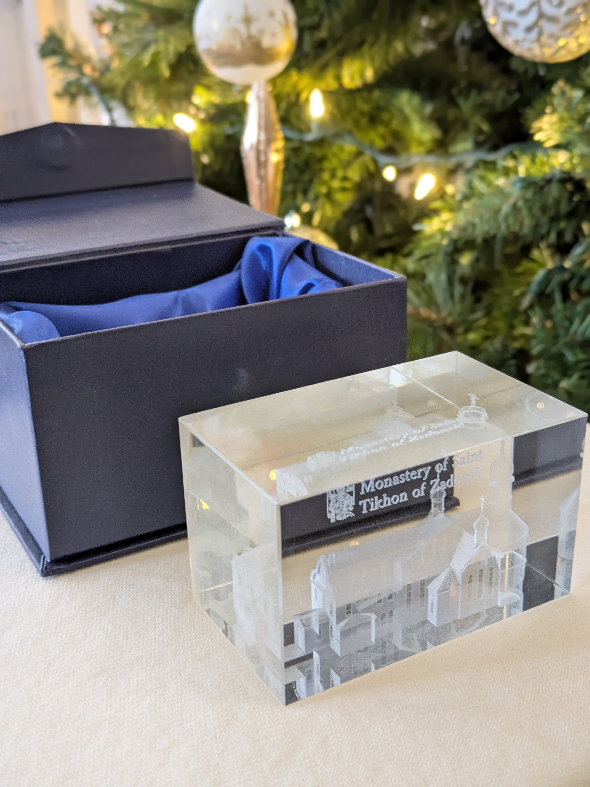
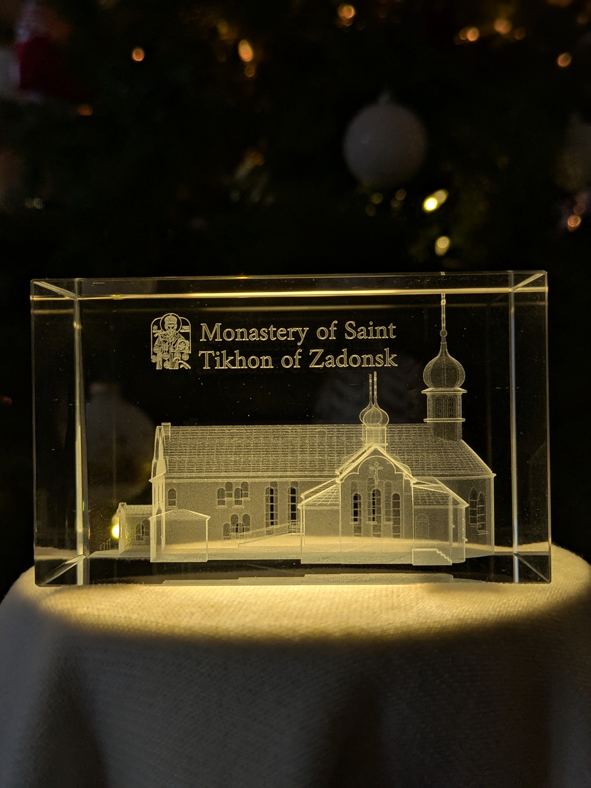
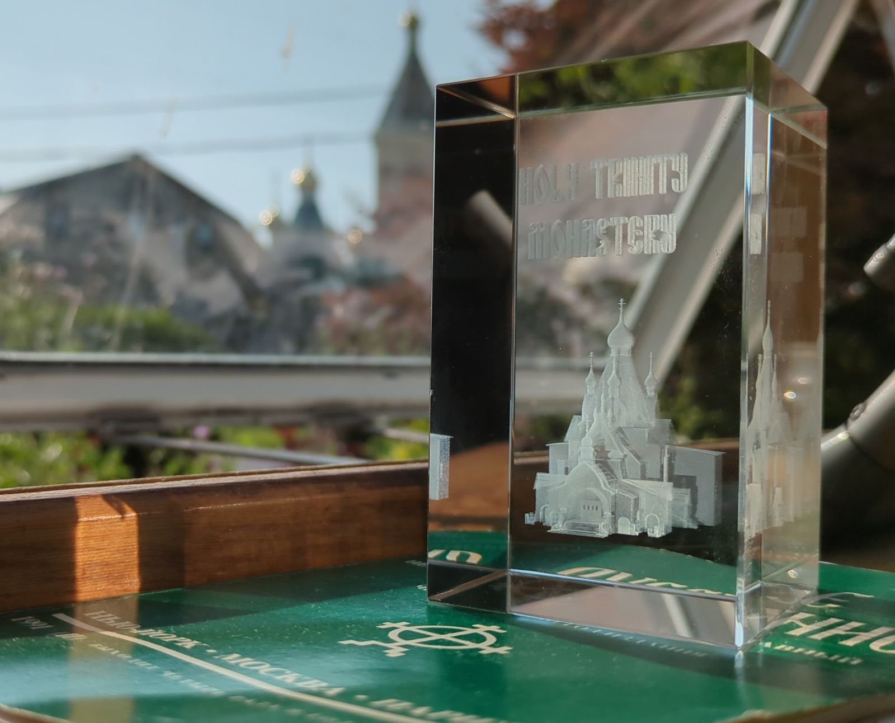

01
01
 02
02

03
04 05
05

06
01
02

03
04
05

06Every face of this cube holds a moment from our work — sacred spaces, honest light, and the craft behind each image. Scroll to turn it.
One of the most significant centers of Russian Orthodox life in North America. We documented its iconography, architecture, and living community over multiple visits.
Monastic life moves at its own pace. We matched it — patient exposure, unhurried composition, light that arrives on its own terms.
Whether it is a single space or an ongoing documentation project — we would like to hear about it. The conversation costs nothing.